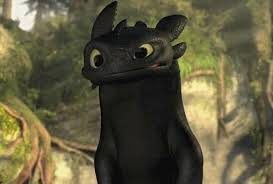
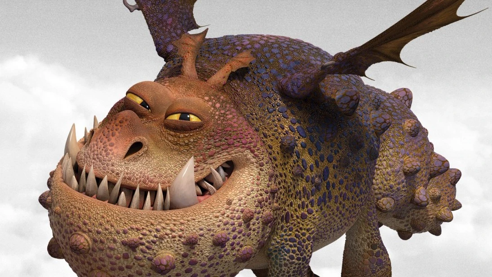
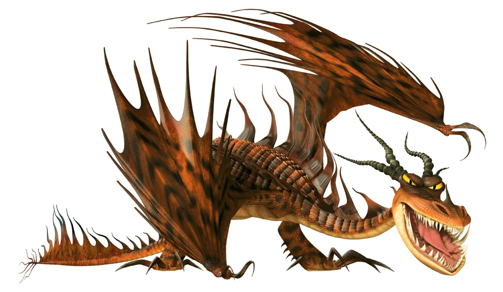
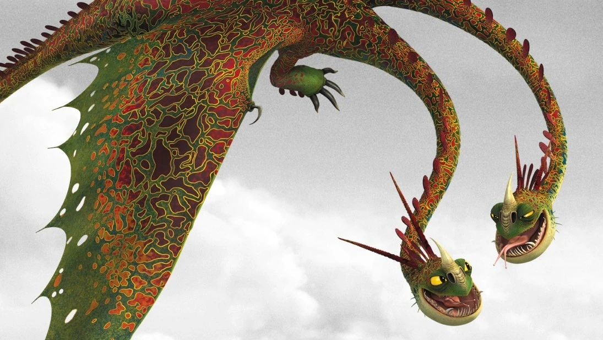
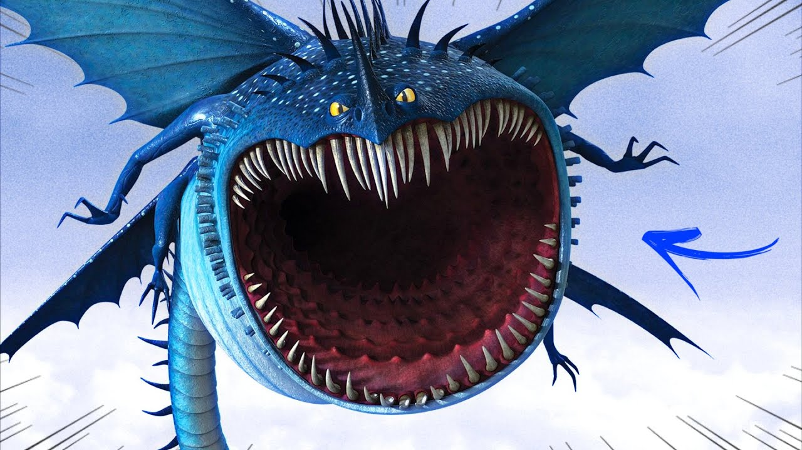
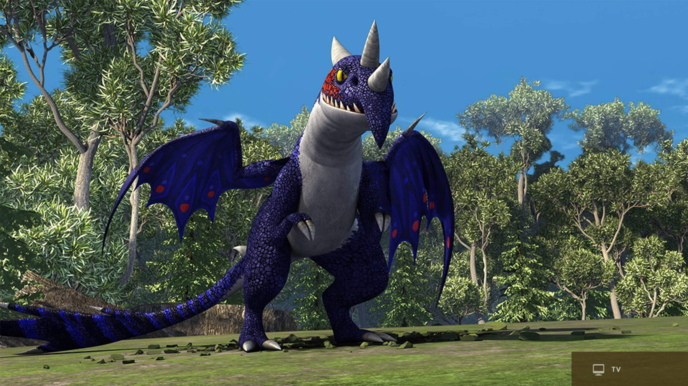

Enciclopedia de todas os dragões existentes em como treinar seu dragão
Fúria da Noite

O Fúria da Noite é a espécie mais lendária e temida do universo Como Treinar o Seu Dragão. Conhecidos como a "cria do relâmpago e da morte", eles disparam rajadas de plasma aquecido, possuem inteligência extrema e escamas escuras que os tornam perfeitamente camuflados nas sombras. O Banguela é o único exemplar conhecido da espécie. Fúria da noite
Classe Relâmpago
Plasma: Os disparos de plasma provenientes de um Fúria da Noite são precisos e frequentemente letais. Cada um dos seis disparos possui uma velocidade impressionante, alcançando até 456 km/h, o que os torna mais rápidos do que um projétil da transformação "Asa de Titã".
Fogo baixo: Com sua chama suave, os Fúria da Noite conseguem aquecer e iluminar a área, como exemplificado na série "Dragões: Corrida até o Limite". Embora essa habilidade não seja tão poderosa quanto seus disparos de plasma, apresentando uma redução de 69% na capacidade de fogo, ela ainda pode ser aproveitada para acender fogueiras, lareiras e situações similares.
Atual:Mundo Escondido, antigamente:Montanhas e Falésias, Florestas Densas e Proximo do mar
Nadder Mortal

O Nadder Mortal é uma das espécies mais famosas, coloridas e inteligentes da franquia Como Treinar o Seu Dragão. Pertencente à classe Rastreadora, ele se destaca pelo seu disparo de magnésio superquente e por sua cauda repleta de espinhos afiados.
Classe Rastreadora
Explosão de magnésio e Disparo de espinhos
Florestas temperadas
Gronkel

O Gronckle é um dos dragões mais populares e resistentes da franquia Como Treinar o Seu Dragão. Pertencente à Classe Rocha, ele se destaca por sua aparência robusta, temperamento dócil e habilidade única de comer pedras para derretê-las e disparar como lava.
Classe Rocha
Explosão de lava e cauda de porrete
Montanhas e cavernas
Pesadelo Monstruoso

O Pesadelo Monstruoso é uma das espécies mais icônicas, agressivas e temidas da franquia Como Treinar o Seu Dragão, famoso por seu hábito de se incendiar. Ele é o principal representante da Classe Brasa, sendo representado na história principalmente pelo dragão Dente de Anzol
Classe Brasa
Explosão de Fogo,pode fazer o seu corpo pegar fogo
Florestas
Ziper Arrepiante

O Zíper Arrepiante (Hideous Zippleback) é um dos dragões mais exóticos e icônicos da franquia Como Treinar o Seu Dragão. Famoso por sua personalidade dupla, ele tem a capacidade única de criar explosões em vez de cuspir fogo.
Classe misterio
Ataque de Gás e Faísca: A cabeça esquerda expele um gás verde altamente inflamável, enquanto a direita produz uma faísca ou chama elétrica para detoná-lo. Isso pode gerar desde pequenas rajadas até explosões devastadoras e cortinas de fumaça.
Ataque de Ouroboros Flamejante: Apresentado em Como Treinar o Seu Dragão 2, permite que o dragão morda sua própria cauda e acenda o gás. Ele vira uma roda de fogo rodopiante que atropela inimigos como se fossem pinos.
Camuflagem de Gás: O gás verde também pode ser usado como uma cortina de fumaça espessa para esconder o dragão durante emboscadas ou fugas.
Cavernas; Florestas
Tambor trovao

O Tambor Trovão (Thunderdrum) é um dragão da classe Maré da franquia Como Treinar o Seu Dragão. Ele é famoso por sua potente explosão sônica, capaz de atordoar inimigos e até extinguir o fogo de outros dragões. Habita cavernas marinhas e lagunas escuras.
Classe Marinha
Poder Sonoro: Seu poderoso rugido consegue afundar navios e é audível a quilômetros de distância. Os filhotinhos também emitem sons fortes o bastante para empurrar objetos e atordoar presas.
Cavernas marinhas e Lagunas escuras
Chifre Estrondoso

Ele é um dragão pouco maior que um fúria da noite,sua cor é vermelho e verde escuro e ele tem a habilidade de soltar um fogo com muito gás fazendo com que cuspa enormes bolas de fogo. Ele é um dragão intimidador pois tem enormes chifres que quebram até uma pedra. Ele foi encontrado salvando a ilha de Soluço e foi adicionado a nova classe Rastreadora
Classe Rastreadora
Rastreamento: Seu olfato é extremamente apurado. Ele consegue rastrear vikings e objetos a quilômetros de distância seguindo a menor pista de cheiro, como demonstrado quando encontra Soluço a partir do seu capacete.
Furtividade: Apesar de grande, consegue camuflar-se muito bem na folhagem e em florestas.
Detecção de Desastres: Possui uma alta sensibilidade para prever desastres naturais, como terremotos e tsunamis, com bastante antecedência.
Míssil Flamejante: Seu poder de fogo é um projétil explosivo de longo alcance que se solidifica antes do impacto.
Florestas
Bafo Quente

esse dragão e um defende seu territorio com suas pequenas explosoes que variam de acordo com a pedra ingerida. São nervozos territoriais dão arrancadas velozes eles cospem uma leve explosão de magnésio.
Classe Rocha
Sopro de Lava: Dispara rajadas de rocha derretida. Quanto mais ele se alimenta, maior e mais forte fica o seu tiro.
Mandíbula Poderosa: Possui uma força extrema, sendo capaz de mastigar minérios de ferro e esmagar pedras e metais com facilidade.
Armadura Natural: Suas escamas são densas e resistentes, o que lhe confere uma defesa formidável contra diversos ataques.
Voar Dormindo: É a sua habilidade mais icônica. Por ter hábitos noturnos e ser muito preguiçoso, ele consegue dormir no meio do voo sem perder o ritmo ou a direção.
cavernas profundas ou áreas rochosas
Dramilhão
